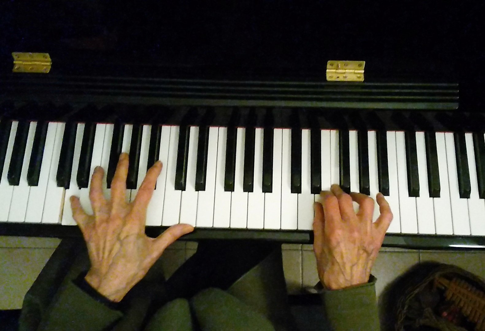
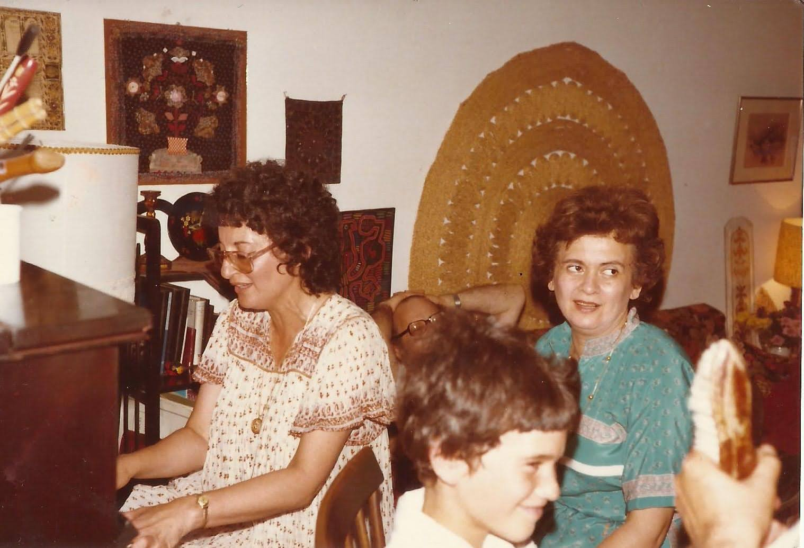
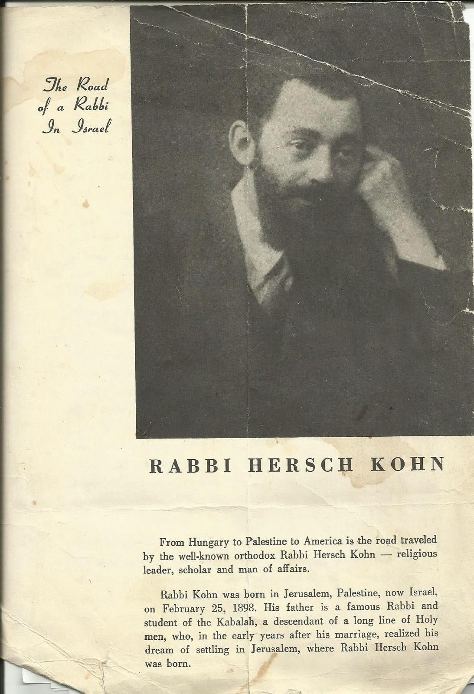
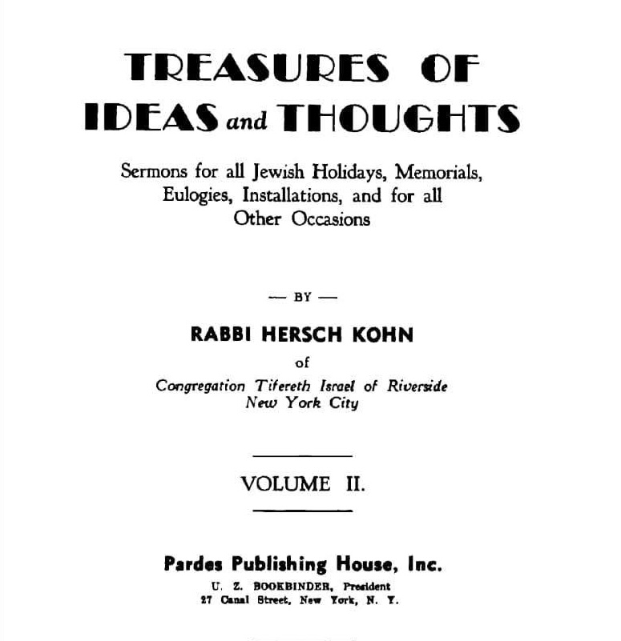

Niggunim are a form of Jewish hymn developed in the 18th century by Ashkenazi Jewish communities in Eastern Europe. They are often wordless and sung over and over again, with no clear beginning or end. You fall into a cycle of repetition, wordless musical journeys that go on repeatedly, which, as intended by the rabbis and mystics that created them, seek to place the singer in a state of deep prayer; the melodies a medium to transcend the physical world and enter into conversation with God.
They were passed down generations, accompanying communities and their stories, decorating their lives, giving their dreams colour. The niggunim I will be playing were passed down by my great-grandfather, who lived in Jerusalem whilst it was under Ottoman rule before moving to New York City. It was during this time in Jerusalem that he encountered strands of Jewish life from across the world, each carrying their own musical traditions and lineages. The melodies we will hear were shaped by generations of life in places across Europe and the Middle East.

These songs are a way I can interact with my Grandma, who passed away some years ago after a long battle with dementia, which caused her personality to slowly fade away. I find that the wordless cycles I will be playing have the special quality of being able to capture her being, and the generations of life and community that preceded her. In doing all this, and in being passed down to me, these hymns preserve and cultivate a sense of Jewishness inherently personal to me and my lineage.
As a Jew in the present day everyone external to me seems to try and dictate who I am and what I stand for. A genocide of the Palestinians is carried out in my name. It is presented as a valiant fight for the preservation of the Jewish people. It is legitimised as a divinely ordained act in service of the generations before us, as a fight against the antisemitism that has plagued us for centuries.
These songs which I will play trace my family and narrate their story. I play them to reject the genocidal acts done in my name, to reclaim my identity, my Jewishness, from those who use it to legitimise their own senseless violence.
Repetition
The songs give us that heavy feeling in the heart which, for no rational reason, seems to put us at ease, calm our bodies and minds, even if nothing visible in our lives has changed. In this sense, they act upon our internal world, help us and enable us to separate ourselves from the physical plane we exist in and transcend somewhere else, somewhere more peaceful than here. This feeling helps us grow roots; in a world where time flies by and seizes us uncontrollably, rips up our identity and ways of existing, a cycle of precarity and being on the edge, constantly outside, constantly becoming, one foot in one foot out, in a moment of a journey but never arriving, things never settling and remaining in wild motion like rides at a travelling funfair. The cogs keep on moving, and this journeying to a never found destination seems like an endless cycle where time supplants us, where we lose track of time and sink into cyclical travelling. So the music which repeats over and over, intentionally and continuously without an end, yet to conclude, never to conclude, keeping us in a state of transition, discordance, a thesis and antithesis never to reach synthesis, a tension, never resolved, just like the music. And so the music comforts us, is powerful and spiritual, a force allowing us to feel secure in this sorry state of difference and movement; we are tired, our bones ache, our mind in pain, we feel as if we either cannot go on or instead grow numb to our surroundings so as to soften the pain, lower the intensity, but the endless repetition of those niggunim may let us confront reality directly, a medium through which we may fall in love with this transitory state, find peace within it.
The melodies float lightly in this ether of becoming; is this state just pain and rootlessness? Or are these melodies an emergence of the divine, are they timeless and permanent, anchoring us down. Words confine us to our external reality while these melodies break us out of it. Oh Lord, don’t let us be weighed down by things which are fixed, which begin and end, start and become something new, let us not tussle with our instability but instead find peace within this mess.
Through repetition we transform spiritually. Each cycle the same story is told, same journey embarked upon, we go again and again. It seems to glide and be still at once, refraining from categorisation, not revealing too much of the newfound landscapes it is giving us a window into, not taking the listener anywhere outside the short loop it offers us; there are no lyrics to tell a story or communicate feelings, no section along which the song is structured, it doesn’t have a clear start or end, but just exists for a period of time and then passes by. In repetition we must exist in the moment of the cycle and find transformation in its unfinalised state. We must embrace states of disbecoming, precarity, uncertainty, weakness, in the moment of the present.
In these moments I want to walk endlessly with a calm breeze at night when it’s quiet and lonely, I want to be in solitude with the music and let it take me away, I want to float away on the water down the canal, to feel free and glide, to dissolve into the landscapes etched into the music, into the soft light that peers through the windows of canalside flats, into the stillness of everything, into the uneven cracks in the concrete, semi paved path I stroll on, I want to hang in the air like the echoes of private conversations taking place nearby, I want to break away into the shifting patterns of the water below, self organised movement of endless fragments of light and water ripples and the breeze and shimmer all coming together, to sing with the wind chimes which guard this space from devious minds and rest sombrely when there are no gusts of air giving them movement, I want to look into the sky extending forever before me and search for meaning in its darkness and find God’s open palm in its stillness


Time passes by like the empty friendships I made with people who only exist when at distance, who live in refrain and who make it clear they are separate from I, in a different world with different timescapes to I, that our hearts do not beat in the same rhythm, that our eyes perceive something different, that their time proceeds as if it were a different life in itself, we stand two feet on the same ground and I look in your direction but my gaze does not reach you and my words float by your ears like the clouds passing above us. Time is not unifying. Time tears me away from myself. Time tells me I am becoming, in a process of change, yet to grow into my possible selves, it assures me that I am the legions of clashing personalities which engage in war within, it enables me to be multiple faculties locked in conflict.